Day 1 — 啟程
一趟說走就走的小旅行，從台北到福岡。清晨五點半出發，搭上長榮 BR 106 飛往福岡。抵達後直奔博多地下街，吃一幸舍的泡系拉麵，排隊買回饅頭大福，逛 OIOI 百貨，最後以夜晚的大東園燒肉完美收尾。
晚上散步到櫛田神社參拜，再走到博多運河城看水舞秀，第一天就在福岡的夜色中結束。


Day 2 — 晨光中的博多
陽光從窗簾縫隙透進來，喚醒了第二天在福岡的早晨。今天排滿了行程，從太宰府天滿宮開始，參拜學問之神。接著搭巴士前往皿嶽山，從山上俯瞰整個福岡市區。
下午回到市區，逛博多運河城和中洲屋台，品嚐道地的屋台料理。晚上則鑽進天神地下街，享受購物的樂趣。


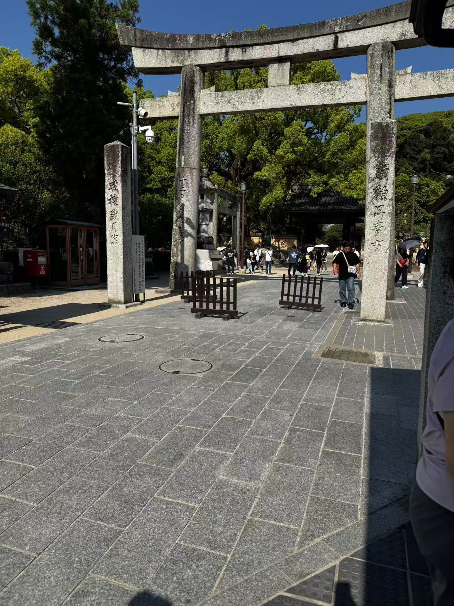

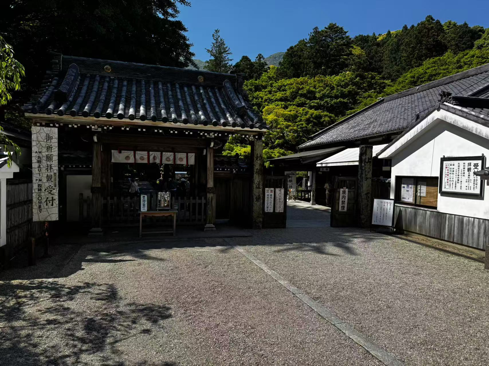
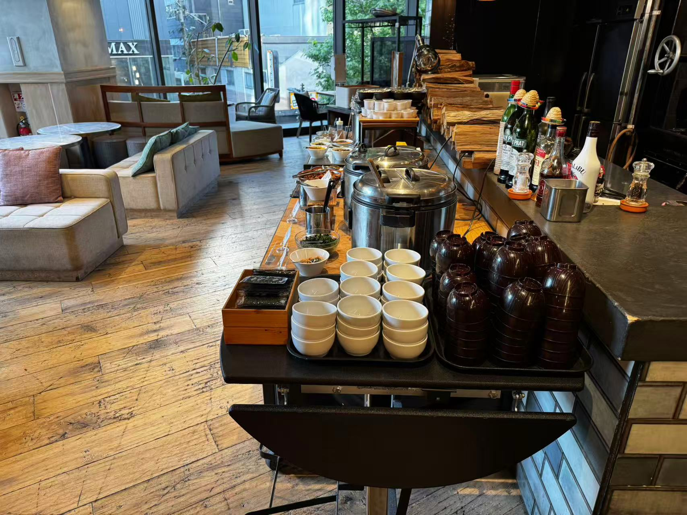
Day 3 — 同一扇窗・不同風景
在陽光飯店的第三天早晨，雖然還是同一間餐廳，但今天換了個位子——窗外的風景完全不一樣了。陽光從另一個方向灑進來，街道的景色也不一樣，這就是住同一間飯店幾天的樂趣。
今天前往豆田神社參拜，接著搭遊船遊覽大川運河，參觀西陣織會館，最後走到三條大橋。傍晚回到天神商圈逛街，走走停停，享受旅行的慢步調。

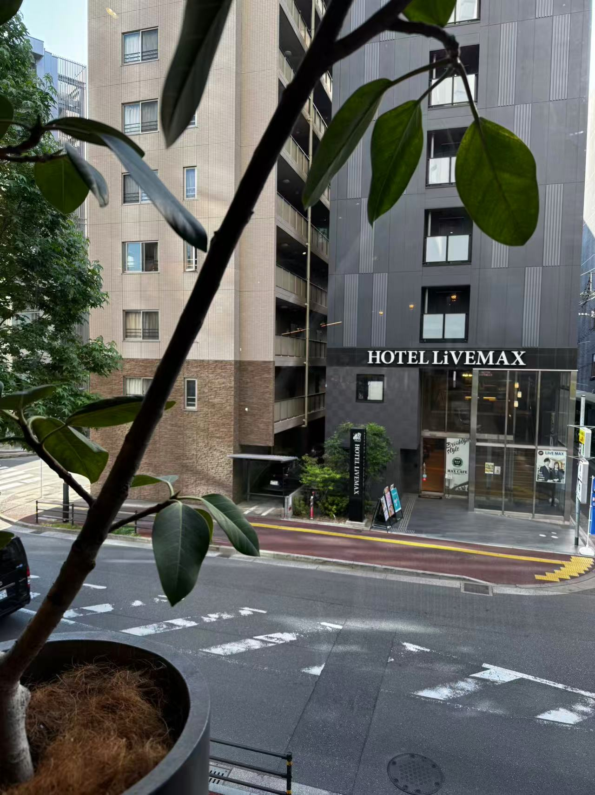


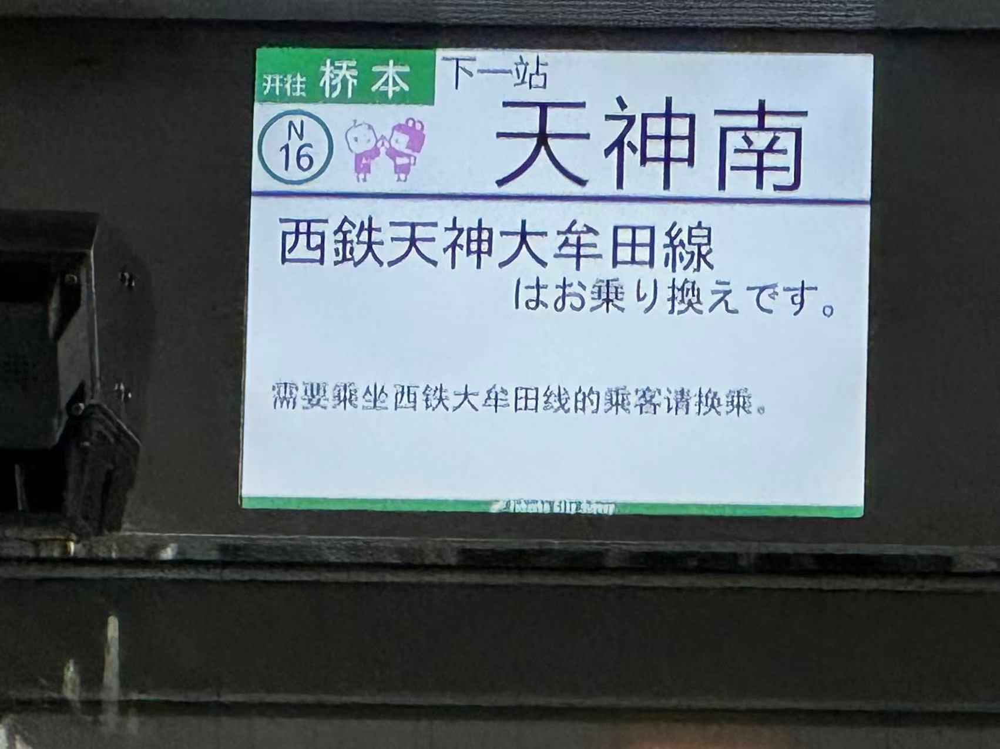
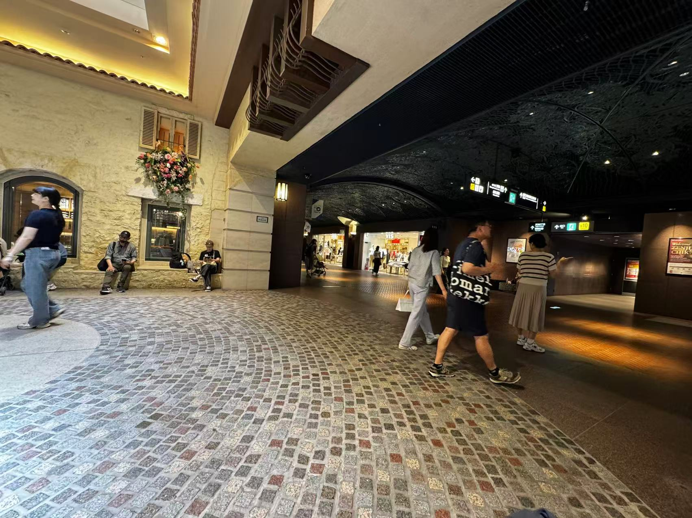
Day 4 — 前田屋牛腸鍋之夜
第四天早上，搭上火車前往六本松。六本松一帶有許多文青小店和咖啡館，氛圍和博多市區很不一樣。在這裡悠閒地散步，感受不一樣的福岡。
下午回到博多運河城吃午餐，再到博多車站採買伴手禮。晚上則是重頭戲——前田屋的牛腸鍋，濃郁的味噌湯底配上軟嫩的牛腸，是福岡必吃的在地美味。
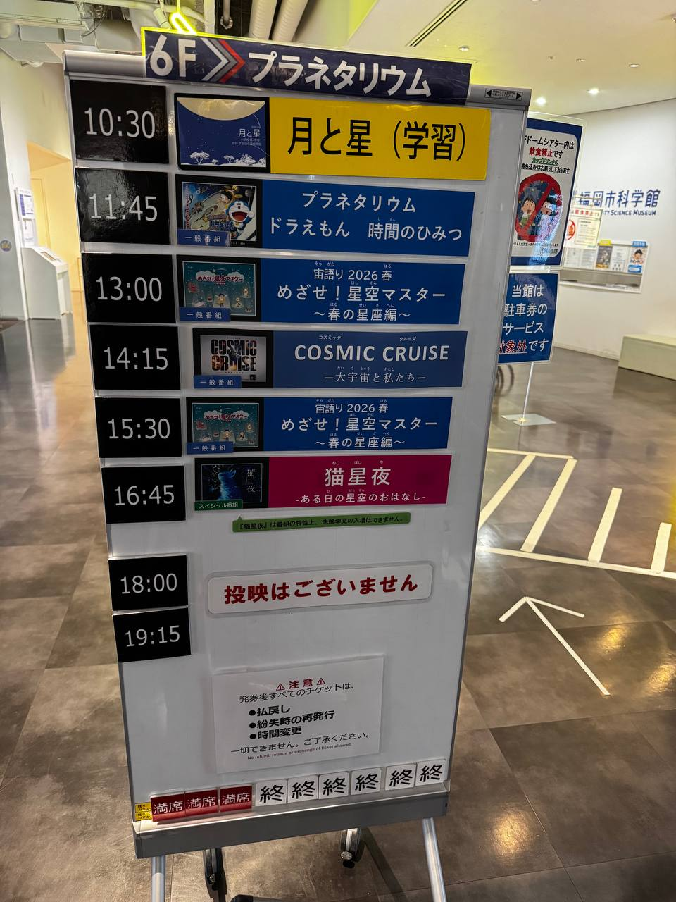
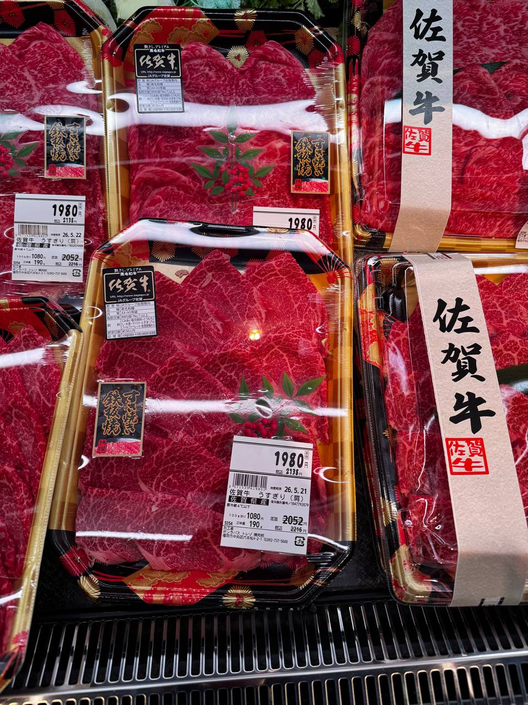
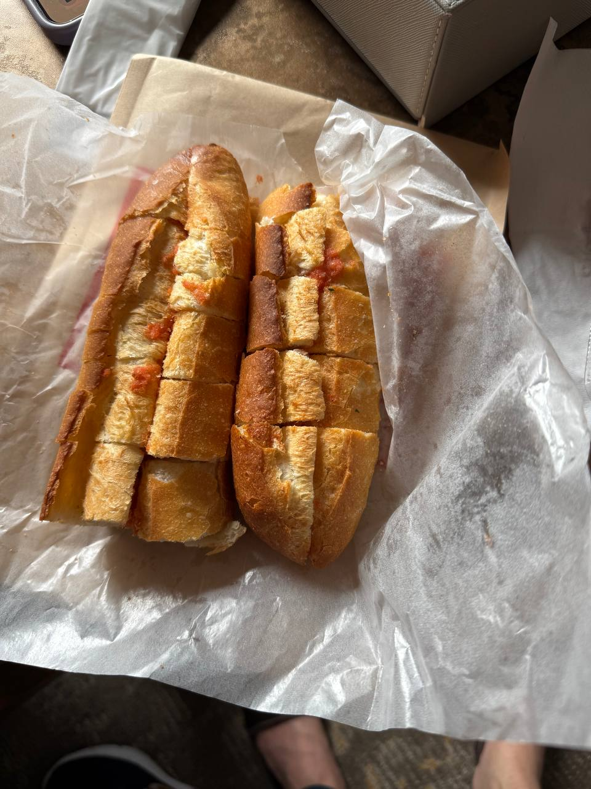

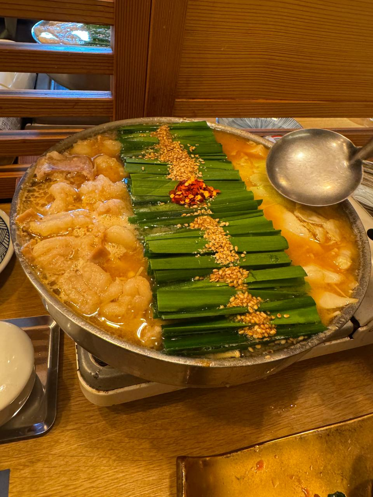
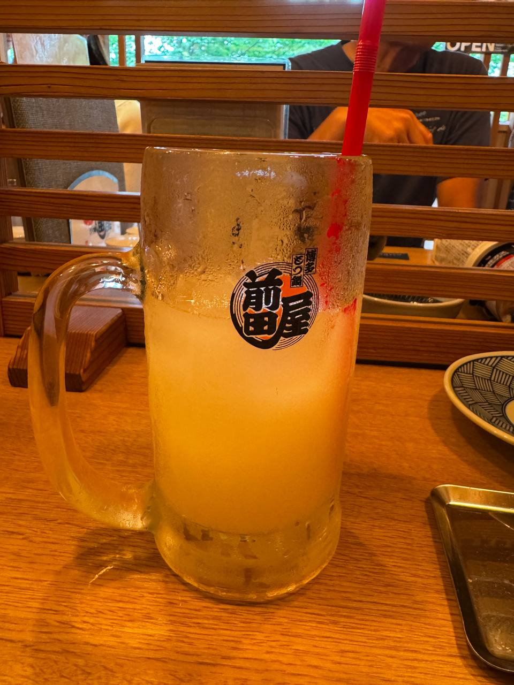
Day 5 — 華味鳥・博多水炊雞
旅程的最後一晚，來到博多水炊雞的經典老店「華味鳥（はなおり）」。湯頭清甜鮮美，雞肉嫩滑多汁，是福岡必訪的在地美味。
用這碗溫暖的雞湯，為這趟五天四夜的九州之旅畫下完美句點。

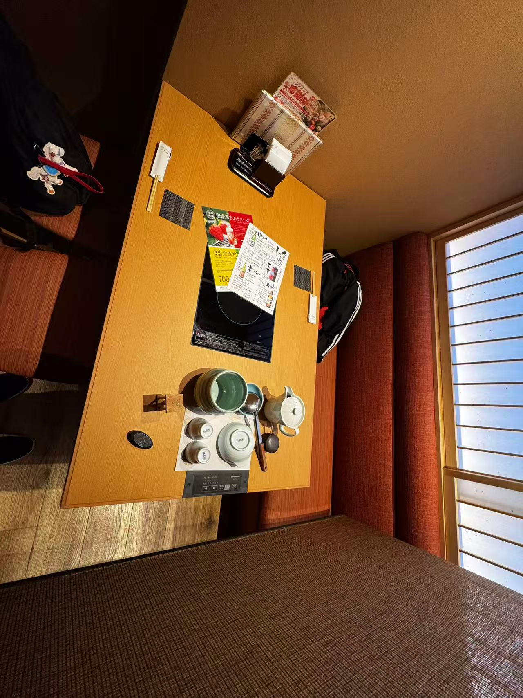
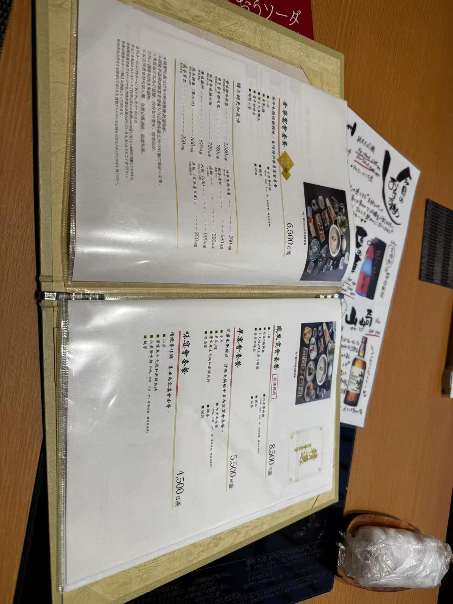
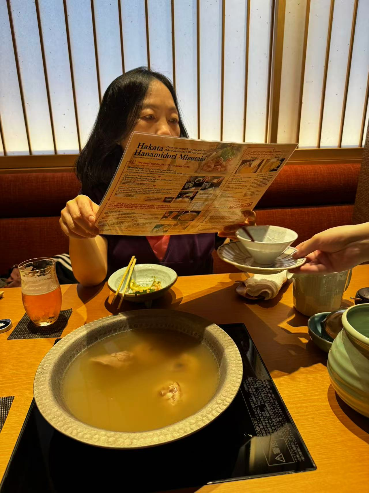